Workbook — Clothes
Exercises 1–10 appear in their original order across pages 17–19, followed by the printed Revision 1 pages 20–21 exactly as they are allocated to this lesson. Listening exercises keep every printed word and picture but claim no answer, because the recordings were not supplied.
1. Read and choose.
Share your Treasure
Join us this Saturday to share your treasure.
Before buying new clothes, let’s empty our wardrobes and help the poor at the same time.
Our Charity Group is organizing a sale in our schoolyard this Saturday, and we need your help.
Please donate the clothes that you do not need to the charity in order to be sold at cheap prices. We will help the poor families in our community.
We look forward to seeing you there.
a. Write true (T) or false (F).
- 1
The group hopes to raise money for the poor.
- 2
The charity doesn’t want donations.
- 3
The charity wants to buy your clothes.
- 4
The charity will help the poor.
0 of 4 answered.
b. What does the word “donate” mean?
The page prints “donate” in double quotation marks; the printed quotation style is reproduced with typographic quotes.
2. Read, look and write.
Hello! My name is Tim and I like clothes. At the moment, I’m wearing my favourite , a blue , , a pair of and a of course! I also like wearing .
I’ve got a sister. Her name is Alice and she also likes fashionable clothes.
Today she is wearing a striped and a floral .
Sometimes she wears a and high heeled .
The page prints a small picture beside each gap. In order they show jeans, a T-shirt, trainers, socks, a cap, shorts, a skirt, a blouse, a dress and shoes. Every picture is a line drawing; the words are not printed.
a. True or false
- The group hopes to raise money for the poor. — True. The clothes are “sold at cheap prices” to help “the poor families in our community”.
- The charity doesn’t want donations. — False. “we need your help” and “Please donate the clothes”.
- The charity wants to buy your clothes. — False. The text asks you to donate clothes; the charity sells them.
- The charity will help the poor. — True. “We will help the poor families in our community.”
b. donate — 1. to give something to help. The text says the clothes are given to the charity so that they can be sold to help poor families.
2. Read, look and write: 1 jeans · 2 T-shirt · 3 trainers · 4 socks · 5 cap · 6 shorts · 7 skirt · 8 blouse · 9 dress · 10 shoes.
The picture beside gap 5 shows a soft cap; “hat” is also accepted. The page prints no key, so these answers are read from the printed pictures.
Open the source page · Workbook · p. 17
This is the original supplied image, shown without redrawing or generation.
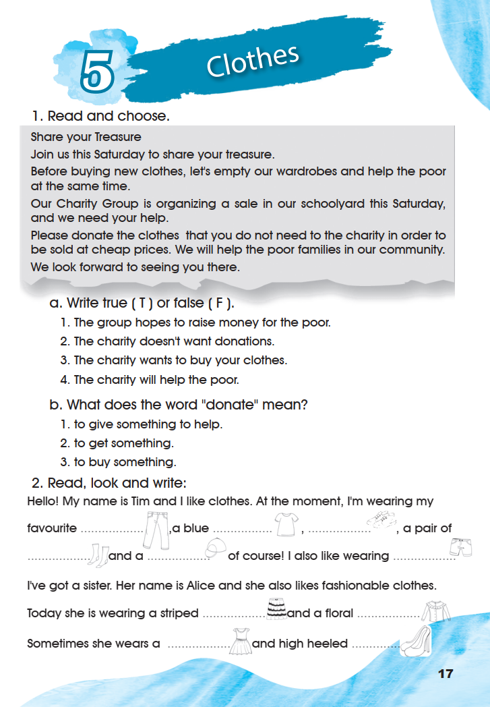
3. Listen and draw on the clothes line.
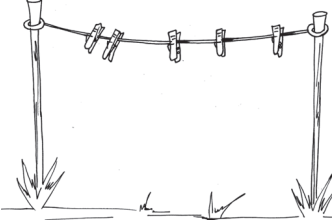
4. Match.
5. Look and describe.
What are they wearing?
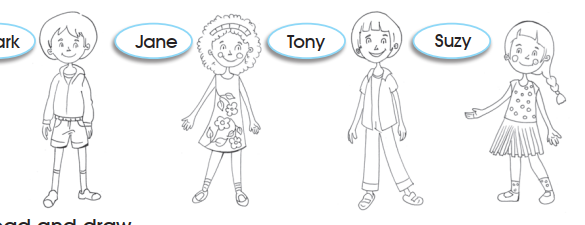
6. Read and draw.
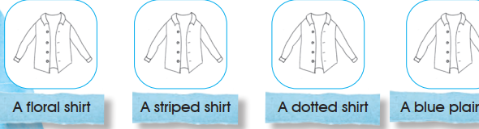
4. Match: 1 b · 2 a · 3 e · 4 c · 5 d.
5. Look and describe. Model answers: Mark is wearing a jacket, shorts and trainers. · Jane is wearing a floral dress. · Tony is wearing a shirt and long trousers. · Suzy is wearing a dotted top and a skirt.
6. Read and draw. Draw the pattern named under each shirt: flowers on the first, stripes on the second, spots on the third, and no pattern on the fourth.
Exercise 3 needs the recording, so it has no key. Exercises 5 and 6 are descriptions and drawing from the printed pictures; other correct wording is accepted.
Open the source page · Workbook · p. 18
This is the original supplied image, shown without redrawing or generation.
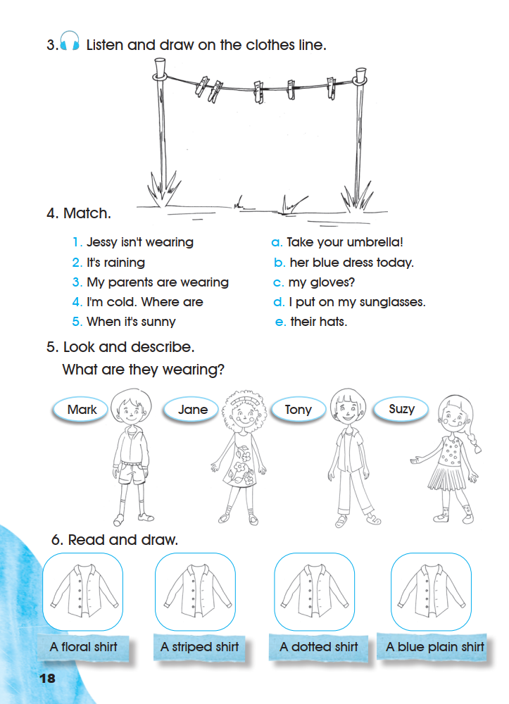
7. Write the verbs in the correct form.
8. Listen, tick and colour the clothes that Hani needs to put in his suitcase.
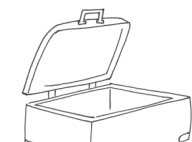
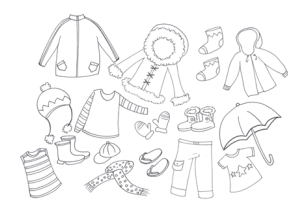
9. Tell your partner about your wardrobe.
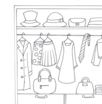
10. Complete.
This is my family. I have a grandfather, a grandmother, a father, a mother and a baby sister.
I am wearing a dress. My father is wearing a striped blue and white T-shirt and .
My mother is wearing a and .
My brother .
My grandfather .
My grandmother .
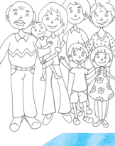
7. Write the verbs in the correct form: a swimming · b studying · c taking · d waiting · e cutting.
8. Needs the recording; no answer is claimed.
10. Complete. Model answers: I am wearing a floral dress. My father is wearing a striped blue and white T-shirt and blue trousers. My mother is wearing a skirt and a white blouse. My brother is wearing grey shorts. My grandfather is wearing a coat. My grandmother is wearing a long dress.
Exercise 10 is personal writing about the printed family picture; the words in the model are suggestions, and another correct description is accepted. Exercise 9 is pair work.
Open the source page · Workbook · p. 19
This is the original supplied image, shown without redrawing or generation.
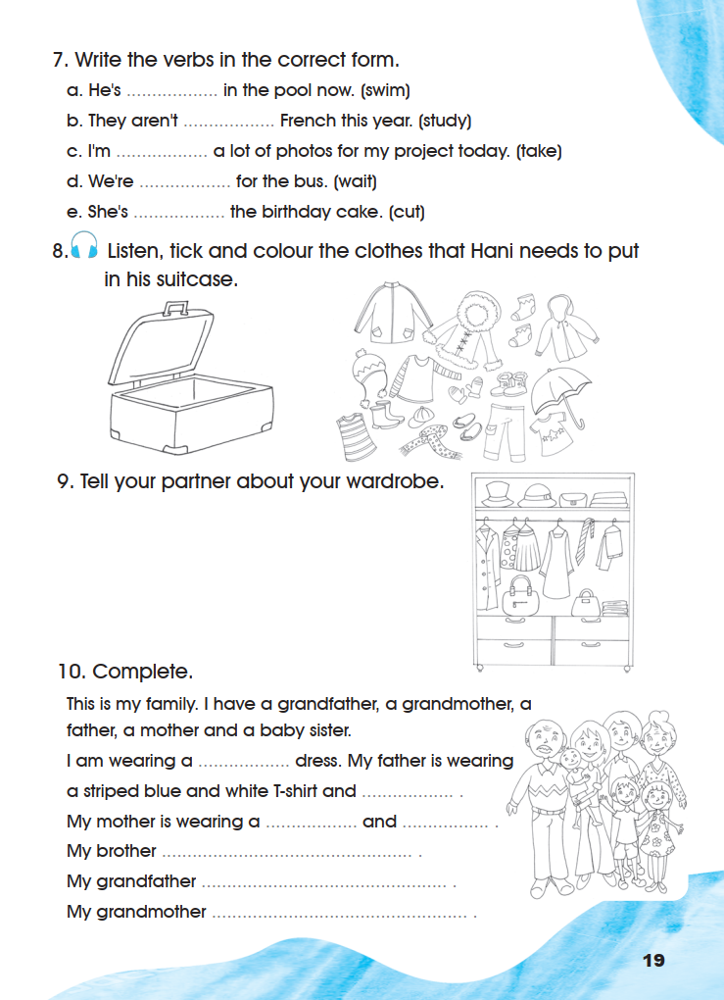
Revision 1 · 1. Choose the correct answer.
Each item prints a sentence and then a second sentence with the two adverbs in brackets. Both printed adverbs are kept in their printed order.
2. Read and match.
Item e prints “quite”, not “quiet”; the printed word is kept unchanged.
3. Fill in the spaces with the words in the box.
- uncle’s
- does
- tastes
- see
- have to
- library
- 1
I can a blue car in the street.
- 2
I like chocolate. It sweet.
- 3
My mum not wake up late.
- 4
We keep our classroom clean.
- 5
She reads books in the .
- 6
Danny works on his farm.
0 of 6 filled.
1. Choose the correct answer: 1 usually (her favourite sport is football) · 2 sometimes (twice a week is not every day) · 3 always (every day) · 4 never (she doesn’t eat it).
2. Read and match: a 3 · b 4 · c 5 · d 2 · e 1.
3. Fill in the spaces: 1 see · 2 tastes · 3 does · 4 have to · 5 library · 6 uncle’s.
Open the source page · Workbook · p. 20
This is the original supplied image, shown without redrawing or generation.
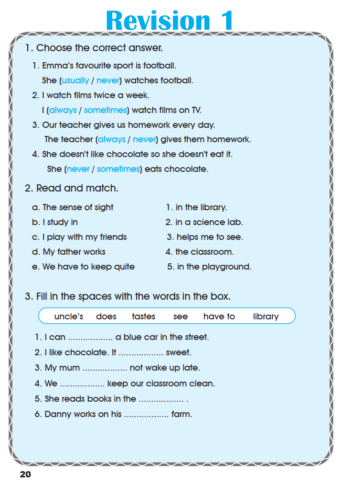
4. Find the words and write them down.
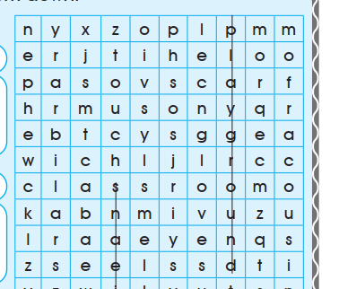
| n | y | x | z | o | p | l | p | m | m |
| e | r | j | t | n | h | e | l | o | o |
| p | a | s | o | v | s | c | a | r | f |
| h | r | m | u | s | o | n | y | q | r |
| e | b | t | c | y | s | g | g | e | a |
| w | i | c | h | l | j | l | r | c | c |
| c | l | a | s | s | r | o | o | m | o |
| k | a | b | n | m | i | v | u | z | u |
| l | r | a | d | e | y | e | n | q | s |
| z | s | e | e | l | s | s | d | t | i |
| y | z | w | j | l | v | u | t | s | n |
Two printed capital letters are reproduced as the lower-case letters the rest of the square uses. The square’s words run across and down, including one word that reads upwards.
In the school playground
Family
Senses
Clothes
0 of 11 filled.
In the school playground: playground · classroom · library
Family: nephew · son · cousin
Senses: smell · see · touch
Clothes: scarf · gloves (with jeans already printed)
All eleven words are in the printed square: playground reads down the eighth column, classroom across the seventh row, library upwards from the seventh row, and the rest in the directions the square allows.
5. Choose.
1 b · 2 a · 3 a (after does the plain verb is used) · 4 b · 5 b (What time asks about a time) · 6 b (always with the present simple) · 7 b (the subject is I).
Open the source page · Workbook · p. 21
This is the original supplied image, shown without redrawing or generation.
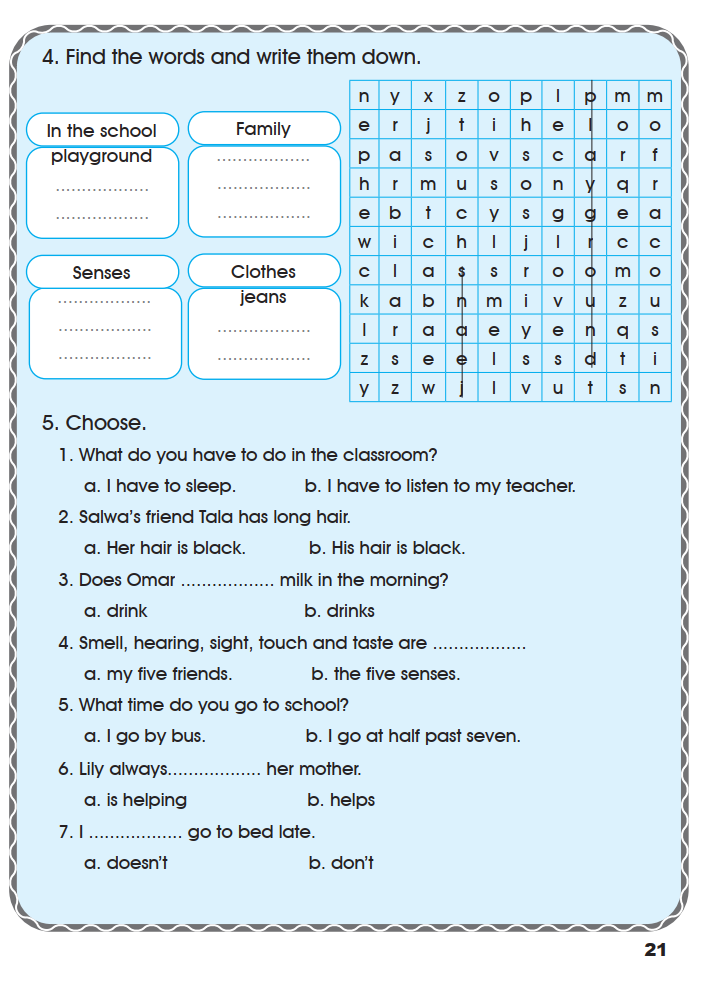